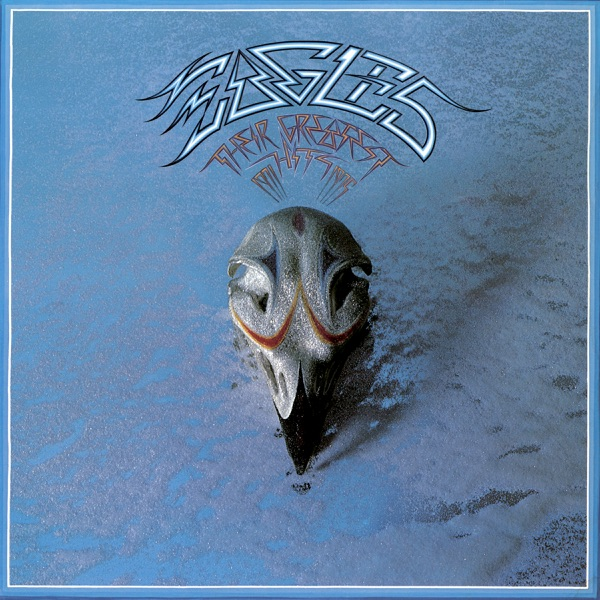

Their Greatest Hits 1971-1975
Eagles
Upgrade idea: Mobile Fidelity MFSL 1-307 (Original Master Recording, 1983) is the audiophile benchmark. Alternatively, the original 1976 Asylum 7E-1052 US pressing with early CSM or PRC stampers is a desirable original.
- Original release
- 1976
- Pressing year
- 2011
- Country
- US
- Format
- Vinyl LP, Compilation, Remastered, Album, Reissue (180 Gram)
- Label / Cat#
- Rhino Records (2) – 7E-1052
- Genres
- Rock
- Styles
- Classic Rock
- Discogs release
- 2711858
- Discogs master
- 59509
- Apple Music
- Their Greatest Hits 1971-1975
- Wikipedia
- Their Greatest Hits 1971-1975
Production notes
Tracklist (Discogs)
| A1 | Take It Easy | |
| A2 | Witchy Woman | |
| A3 | Lyin' Eyes | |
| A4 | Already Gone | |
| A5 | Desperado | |
| B1 | One Of These Nights | |
| B2 | Tequila Sunrise | |
| B3 | Take It To The Limit | |
| B4 | Peaceful Easy Feeling | |
| B5 | Best Of My Love |
Tracklist (Apple Music)
| 1 | Take It Easy | 3:31 |
| 2 | Witchy Woman | 4:10 |
| 3 | Lyin' Eyes | 6:21 |
| 4 | Already Gone | 4:15 |
| 5 | Desperado | 3:33 |
| 6 | One of These Nights | 4:51 |
| 7 | Tequila Sunrise | 2:53 |
| 8 | Take It to the Limit | 4:47 |
| 9 | Peaceful Easy Feeling | 4:17 |
| 10 | The Best of My Love | 4:34 |
Personnel & credits
- Bill Szymczyk — Producer
- Glyn Johns — Producer
- Bernie Leadon — Written-By
- Don Henley — Written-By
- Glenn Frey — Written-By
- Jack Tempchin — Written-By
- Jackson Browne — Written-By
- John David Souther — Written-By
- Randy Meisner — Written-By
- Robb Strandlund — Written-By
Identifiers
- Barcode: 0 81227 97937 9 (Printed)
- Barcode: 081227979379 (UPC-A, Scanned)
- Barcode: 0081227979379 (EAN-Code, Scanned)
- Matrix / Runout: R1-1052-A 19436.1(3)...TML (Side A runout, etched / stamped)
- Matrix / Runout: R1-1052-B 19437.1(3)...TML (Side B runout, etched / stamped)
Notes
• Premium HQ 180 Gram Vinyl
• Cut from the Original Analog Master Tapes!
• Mastered at The Mastering Lab
• Pressed at RTI
• Original packaging with Embossed Cover!
Barcode sticker on outer plastic.
Notes & discrepancies
- Release year differs: your pressing=2011, Apple Music edition=1976. Apple Music typically streams the most recent remaster.
Their Greatest Hits 1971–1975 is one of the best-selling albums in US history — certified 38× platinum by the RIAA, it held the record as the best-selling album of all time in the United States for decades (eventually surpassed by Michael Jackson’s Thriller in 2018). Released in February 1976 on Asylum Records, it compiled the Eagles’ hit singles from their first four albums: Eagles, Desperado, On the Border, and One of These Nights. The album captures the band at the height of their commercial and artistic dominance of mid-1970s American rock, spanning their early country-rock sound through the harder-edged FM rock that would define Hotel California.
The compilation is notable for what it represents historically: a snapshot of a band that had, by 1976, already sold tens of millions of records and were on the verge of releasing Hotel California (1977), which would cement their legacy as one of the defining acts of the decade. The track selection is impeccable — every song here was a hit, and the sequencing flows naturally from softer country-rock (“Take It Easy,” “Peaceful Easy Feeling”) through the band’s growing confidence (“Already Gone,” “Lyin’ Eyes”) and tougher rock (“Take It to the Limit,” “One of These Nights”).
The 2011 Rhino remastered reissue presents the album with a fresh remaster from the original analog tapes, pressed on standard-weight vinyl with updated catalog artwork. The matrix codes
R1-1052-A 19436.1(3) TMLidentify this as the Rhino/Asylum pressing, mastered at Turtletone Mastering Lab (TML) in 2011. This is a clean, contemporary remaster that brings the album’s production clarity to modern playback systems without the surface noise concerns of original 1976 pressings.About this 2011 US pressing (Vinyl, LP, Remastered): Rhino Records / Asylum catalog 7E-1052, 2011 remastered reissue. Barcode 081227979379. Matrix R1-1052-A / R1-1052-B, mastered at Turtletone Mastering Lab (TML).